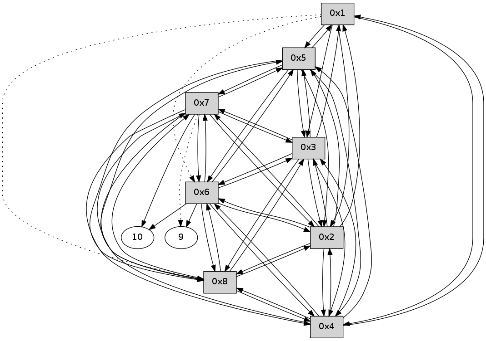

>> << IDX [start] -100 -25 -5 +0 +5 +25 +100 [220.012504816]
 Previous packets
----------------------------------------------------------------------
215.283688 beacon01(11f6) #0 coord=01,02,03,04,05,06,07,08,0a,09 cycle=688.0ms assoc
-- color-indic=0 64 b6 1c
215.293841 beacon02(11f6) #0 coord=01,02,03,04,05,06,07,08,0a,09 cycle=688.0ms assoc 64 25 2d
215.303824 beacon03(11f6) #0 coord=01,02,03,04,05,06,07,08,0a,09 cycle=688.0ms assoc 64 5f 60
215.313823 beacon04(11f6) #0 coord=01,02,03,04,05,06,07,08,0a,09 cycle=688.0ms assoc 64 28 8a
215.323825 beacon05(11f6) #0 coord=01,02,03,04,05,06,07,08,0a,09 cycle=688.0ms assoc 64 52 c7
215.333824 beacon06(11f6) #0 coord=01,02,03,04,05,06,07,08,0a,09 cycle=688.0ms assoc 64 dc 10
215.343824 beacon07(11f6) #0 coord=01,02,03,04,05,06,07,08,0a,09 cycle=688.0ms assoc 64 a6 5d
215.353829 beacon08(11f6) #0 coord=01,02,03,04,05,06,07,08,0a,09 cycle=688.0ms assoc 64 23 cc
215.468944 [Hello(1): seq=84 sym=5,3,2,4 asym=8,6 sysInfo= stat=5:0,0,0,0/3:1,0,0,0/2:12,0,0,0/4:0,0,0,0/8:2,0,0,0/6:0,0,0,0]
----------------------------------------------------------------------
216.071824 beacon01(11f6) #0 coord=01,02,03,04,05,06,07,08,0a,09 cycle=688.0ms assoc
-- color-indic=0 64 72 12
216.081996 beacon02(11f6) #0 coord=01,02,03,04,05,06,07,08,0a,09 cycle=688.0ms assoc 64 e1 23
216.091959 beacon03(11f6) #0 coord=01,02,03,04,05,06,07,08,0a,09 cycle=688.0ms assoc 64 9b 6e
216.101961 beacon04(11f6) #0 coord=01,02,03,04,05,06,07,08,0a,09 cycle=688.0ms assoc 64 ec 84
216.111960 beacon05(11f6) #0 coord=01,02,03,04,05,06,07,08,0a,09 cycle=688.0ms assoc 64 96 c9
216.131962 beacon07(11f6) #0 coord=01,02,03,04,05,06,07,08,0a,09 cycle=688.0ms assoc 64 62 53
216.141964 beacon08(11f6) #0 coord=01,02,03,04,05,06,07,08,0a,09 cycle=688.0ms assoc 64 e7 c2
216.182204 [Hello(3): seq=84 sym=1,2,7,5,6,8,4 sysInfo= stat=1:4,0,0,0/2:13,0,0,0/7:7,0,0,0/5:0,0,0,0/6:13,0,0,0/8:1,0,0,0/4:2,0,0,0]
216.191504 [Hello(8): seq=84 sym=2,7,5,6,3,4 sysInfo= stat=2:4,0,0,0/7:11,0,0,0/5:12,0,0,0/6:2,0,0,0/3:9,0,0,0/4:15,0,0,0]
216.208434 [Hello(5): seq=84 sym=1,2,7,6,3,8,4 sysInfo= stat=1:4,0,0,0/2:13,0,0,0/7:8,0,0,0/6:13,0,0,0/3:15,0,0,0/8:2,0,0,0/4:1,0,0,0]
216.212530 [Hello(7): seq=84 sym=10,5,6,8,3,2,4 sysInfo= stat=10:6,0,0,0/5:13,0,0,0/6:2,0,0,0/8:4,0,0,0/3:5,0,0,0/2:15,0,0,0/4:13,0,0,0]
216.228783 [Hello(4): seq=84 sym=1,2,5,6,3,8,7 sysInfo= stat=1:3,0,0,0/2:14,0,0,0/5:1,0,0,0/6:12,0,0,0/3:1,0,0,0/8:1,0,0,0/7:0,0,0,0]
216.240261 [Hello(6): seq=84 sym=10,7,5,3,8,4,2,9 sysInfo= stat=10:13,0,0,0/7:12,0,0,0/5:6,0,0,0/3:13,0,0,0/8:3,0,0,0/4:3,0,0,0/2:13,0,0,0/9:10,0,0,0]
216.246849 [Hello(2): seq=84 sym=1,7,5,3,8,4,6 sysInfo= stat=1:3,0,0,0/7:7,0,0,0/5:1,0,0,0/3:0,0,0,0/8:2,0,0,0/4:0,0,0,0/6:9,0,0,0]
----------------------------------------------------------------------
216.859959 beacon01(11f6) #0 coord=01,02,03,04,05,06,07,08,0a,09 cycle=688.0ms assoc
-- color-indic=0 64 ce 17
216.870118 beacon02(11f6) #0 coord=01,02,03,04,05,06,07,08,0a,09 cycle=688.0ms assoc 64 5d 26
216.880094 beacon03(11f6) #0 coord=01,02,03,04,05,06,07,08,0a,09 cycle=688.0ms assoc 64 27 6b
216.890095 beacon04(11f6) #0 coord=01,02,03,04,05,06,07,08,0a,09 cycle=688.0ms assoc 64 50 81
216.900096 beacon05(11f6) #0 coord=01,02,03,04,05,06,07,08,0a,09 cycle=688.0ms assoc 64 2a cc
217.049481 [Hello(1): seq=85 sym=5,3,2,4 asym=8,6 sysInfo= stat=5:1,0,0,0/3:2,0,0,0/2:13,0,0,0/4:1,0,0,0/8:3,0,0,0/6:1,0,0,0]
----------------------------------------------------------------------
217.648094 beacon01(11f6) #0 coord=01,02,03,04,05,06,07,08,0a,09 cycle=688.0ms assoc
-- color-indic=0 64 fa 0f
217.658265 beacon02(11f6) #0 coord=01,02,03,04,05,06,07,08,0a,09 cycle=688.0ms assoc 64 69 3e
217.668229 beacon03(11f6) #0 coord=01,02,03,04,05,06,07,08,0a,09 cycle=688.0ms assoc 64 13 73
217.678230 beacon04(11f6) #0 coord=01,02,03,04,05,06,07,08,0a,09 cycle=688.0ms assoc 64 64 99
217.688230 beacon05(11f6) #0 coord=01,02,03,04,05,06,07,08,0a,09 cycle=688.0ms assoc 64 1e d4
217.698230 beacon06(11f6) #0 coord=01,02,03,04,05,06,07,08,0a,09 cycle=688.0ms assoc 64 90 03
217.708230 beacon07(11f6) #0 coord=01,02,03,04,05,06,07,08,0a,09 cycle=688.0ms assoc 64 ea 4e
217.718235 beacon08(11f6) #0 coord=01,02,03,04,05,06,07,08,0a,09 cycle=688.0ms assoc 64 6f df
217.763715 [Hello(3): seq=85 sym=1,2,7,5,6,8,4 sysInfo= stat=1:5,0,0,0/2:14,0,0,0/7:8,0,0,0/5:1,0,0,0/6:14,0,0,0/8:2,0,0,0/4:3,0,0,0]
217.777412 [Hello(8): seq=85 sym=2,7,5,6,3,4 sysInfo= stat=2:5,0,0,0/7:12,0,0,0/5:13,0,0,0/6:3,0,0,0/3:10,0,0,0/4:0,0,0,0]
217.786423 [Hello(4): seq=85 sym=1,2,5,6,3,8,7 sysInfo= stat=1:4,0,0,0/2:15,0,0,0/5:1,0,0,0/6:13,0,0,0/3:2,0,0,0/8:2,0,0,0/7:0,0,0,0]
217.825759 [Hello(6): seq=85 sym=10,7,5,3,8,4,2,9 sysInfo= stat=10:13,0,0,0/7:12,0,0,0/5:6,0,0,0/3:14,0,0,0/8:4,0,0,0/4:4,0,0,0/2:14,0,0,0/9:10,0,0,0]
217.861444 [Hello(5): seq=85 sym=1,2,7,6,3,8,4 sysInfo= stat=1:5,0,0,0/2:14,0,0,0/7:9,0,0,0/6:15,0,0,0/3:0,0,0,0/8:3,0,0,0/4:3,0,0,0]
217.874103 [Hello(2): seq=85 sym=1,7,5,3,8,4,6 sysInfo= stat=1:4,0,0,0/7:7,0,0,0/5:1,0,0,0/3:1,0,0,0/8:3,0,0,0/4:1,0,0,0/6:10,0,0,0]
217.891804 [Hello(7): seq=85 sym=10,5,6,8,3,2,4 asym=9 sysInfo= stat=10:6,0,0,0/5:13,0,0,0/6:4,0,0,0/8:5,0,0,0/3:6,0,0,0/2:0,0,0,0/4:14,0,0,0/9:0,0,0,0]
----------------------------------------------------------------------
218.436232 beacon01(11f6) #0 coord=01,02,03,04,05,06,07,08,0a,09 cycle=688.0ms assoc
-- color-indic=0 64 46 0a
218.446386 beacon02(11f6) #0 coord=01,02,03,04,05,06,07,08,0a,09 cycle=688.0ms assoc 64 d5 3b
218.456367 beacon03(11f6) #0 coord=01,02,03,04,05,06,07,08,0a,09 cycle=688.0ms assoc 64 af 76
218.466366 beacon04(11f6) #0 coord=01,02,03,04,05,06,07,08,0a,09 cycle=688.0ms assoc 64 d8 9c
218.476367 beacon05(11f6) #0 coord=01,02,03,04,05,06,07,08,0a,09 cycle=688.0ms assoc 64 a2 d1
218.486367 beacon06(11f6) #0 coord=01,02,03,04,05,06,07,08,0a,09 cycle=688.0ms assoc 64 2c 06
218.496367 beacon07(11f6) #0 coord=01,02,03,04,05,06,07,08,0a,09 cycle=688.0ms assoc 64 56 4b
218.506372 beacon08(11f6) #0 coord=01,02,03,04,05,06,07,08,0a,09 cycle=688.0ms assoc 64 d3 da
218.668099 [Hello(1): seq=86 sym=5,3,2,4 asym=8,6 sysInfo= stat=5:1,0,0,0/3:3,0,0,0/2:13,0,0,0/4:2,0,0,0/8:4,0,0,0/6:2,0,0,0]
----------------------------------------------------------------------
219.224368 beacon01(11f6) #0 coord=01,02,03,04,05,06,07,08,0a,09 cycle=688.0ms assoc
-- color-indic=0 64 82 04
219.234528 beacon02(11f6) #0 coord=01,02,03,04,05,06,07,08,0a,09 cycle=688.0ms assoc 64 11 35
219.244503 beacon03(11f6) #0 coord=01,02,03,04,05,06,07,08,0a,09 cycle=688.0ms assoc 64 6b 78
219.254502 beacon04(11f6) #0 coord=01,02,03,04,05,06,07,08,0a,09 cycle=688.0ms assoc 64 1c 92
219.264504 beacon05(11f6) #0 coord=01,02,03,04,05,06,07,08,0a,09 cycle=688.0ms assoc 64 66 df
219.274504 beacon06(11f6) #0 coord=01,02,03,04,05,06,07,08,0a,09 cycle=688.0ms assoc 64 e8 08
219.284504 beacon07(11f6) #0 coord=01,02,03,04,05,06,07,08,0a,09 cycle=688.0ms assoc 64 92 45
219.294508 beacon08(11f6) #0 coord=01,02,03,04,05,06,07,08,0a,09 cycle=688.0ms assoc 64 17 d4
219.334759 [Hello(5): seq=86 sym=1,2,7,6,3,8,4 sysInfo= stat=1:6,0,0,0/2:15,0,0,0/7:10,0,0,0/6:15,0,0,0/3:0,0,0,0/8:3,0,0,0/4:3,0,0,0]
219.398536 [Hello(8): seq=86 sym=2,7,5,6,3,4 sysInfo= stat=2:5,0,0,0/7:13,0,0,0/5:14,0,0,0/6:4,0,0,0/3:10,0,0,0/4:1,0,0,0]
219.402262 [Hello(6): seq=86 sym=10,7,5,3,8,4,2,9 sysInfo= stat=10:13,0,0,0/7:13,0,0,0/5:7,0,0,0/3:14,0,0,0/8:4,0,0,0/4:4,0,0,0/2:14,0,0,0/9:12,0,0,0]
219.433012 [Hello(4): seq=86 sym=1,2,5,6,3,8,7 sysInfo= stat=1:5,0,0,0/2:0,0,0,0/5:3,0,0,0/6:15,0,0,0/3:2,0,0,0/8:3,0,0,0/7:1,0,0,0]
219.453363 [Hello(2): seq=86 sym=1,7,5,3,8,4,6 sysInfo= stat=1:5,0,0,0/7:8,0,0,0/5:2,0,0,0/3:1,0,0,0/8:4,0,0,0/4:2,0,0,0/6:11,0,0,0]
219.473083 [Hello(3): seq=86 sym=1,2,7,5,6,8,4 sysInfo= stat=1:6,0,0,0/2:15,0,0,0/7:9,0,0,0/5:2,0,0,0/6:0,0,0,0/8:4,0,0,0/4:5,0,0,0]